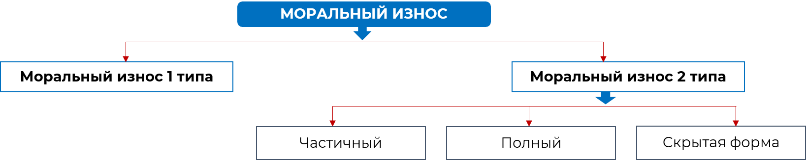

3/10
Моральный износ (устаревание) происходит, когда основные средства устаревают с технической точки зрения или становятся менее эффективными по сравнению с новыми моделями, он подразделяется на два типа:

Первый тип морального износа относится к обесцениванию основных средств в результате производства аналогичных, но более дешевых. Это связано с тем, что с развитием технологии удается производить основные средства с меньшими затратами, таким образом, старое оборудование теряет свою ценность и перестоит быть конкурентоспособным.
– Частичный моральный износ – это частичная потеря потребительской стоимости и стоимости промышленно-производственного оборудования. Постепенное увеличение этого процесса на определенных работах можно достигнуть такого уровня, когда более разумным становится использование объекта в других целях и условиях производства, где его эффективность сохраняется.
– Полный моральный износ – это полное обесценивание, когда дальнейшая эксплуатация объекта в любых условиях убыточна. Возможна ситуация, когда неубыточные операции еще возможны, но они реализуются на более производительных машинах. Устаревшую машину разбирают на запасные части или списываются в металлолом.
– Скрытая форма морального износа, которая подразумевает угрозу обесценивания промышленно-производственного оборудования, вследствие того, что уже разработано задание на разработку нового более производительного и экономически выгодного оборудования.
Минимизирование отрицательных эффектов морального износа возможно путем осуществления модификации или реконструкции промышленно-производственных фондов.
Пример. Определите физический износ основных средств по объему выполненных работ и по сроку службы оборудования, если нормативный срок службы оборудования 17 лет, фактически оно отработаю 7 лет. Годовая производственная мощность оборудования 135 тыс. ед. продукции. Количество продукции, фактически выработанной за год 113 тыс. ед.
Ответ: Износ по объёму работ составляет 35%, а по сроку службы 41%.